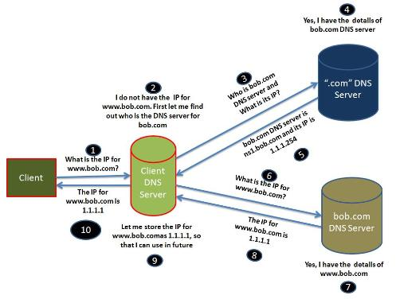

El Domain Name System (DNS) es el talón de Aquiles de la Web. Lo importante es que se gestionan de forma responsable.
Tim Berners-Lee
Acerca del protocolo
-
¿Qué es DNS?
Domain Name System o DNS (en castellano: sistema de nombres de dominio).
-
¿Por qué?
Porque los humanos no recordamos bien los números.
-
¿Cuándo?
1984-1985: descentralización del sistema, creación de BIND (Berkeley Internet Name Domain), los primeros TLDs genéricos...
¿Qué es un NIC?

Network Information Center o Centro de Información de Redes es una organización que controla el registro de los nombres de dominio dentro de los niveles que le corresponde, y controla las políticas de asignación de nombres en el dominio que le concierne. Básicamente existe un NIC por cada país en el mundo y ese NIC es el responsable por todos los dominios con terminación correspondiente a dicho país.
¿Y la ICANN?
Internet Corporation for Assigned Names and Numbers es una organización sin fines de lucro creada en 1998 que opera a nivel internacional y es la responsable de asignar las direcciones del protocolo IP, de los identificadores de protocolo, de las funciones de gestión del sistema de dominio y de la administración del sistema de servidores raíz.
Fully Qualified Domain Name (FQDN)
Es lo que normalmente conocemos por dominio.
Componentes
El DNS opera mediante tres componentes principales:
-
Los Clientes DNS: Programas que por lo general están en los ordenadores de los usuarios y que hacen peticiones de resolución de nombres, por ejemplo: un navegador web.
-
Los Servidores DNS: Son servidores que contestan las consultas realizadas por los Clientes DNS. Los servidores recursivos tienen la capacidad de reenviar la petición a otro servidor si no disponen de la dirección solicitada.
-
Zonas de Autoridad: Almacenan datos en los servidores DNS de los dominios. Cada zona de autoridad abarca al menos un dominio y posiblemente sus subdominios, si estos últimos no son delegados a otras zonas de autoridad.
Esquema de petición de resolución de DNS

Tipos de registros
- A = Address – (Dirección) Este registro se usa para traducir nombres de servidores de alojamiento a direcciones IPv4.
- AAAA = Address – (Dirección) Este registro se usa en IPv6 para traducir nombres de hosts a direcciones IPv6.
- CNAME = Canonical Name – (Nombre Canónico) Se usa para crear nombres de servidores de alojamiento adicionales, o alias, para los servidores de alojamiento de un dominio. Es usado cuando se están corriendo múltiples servicios (como ftp y servidor web) en un servidor con una sola dirección ip. Cada servicio tiene su propia entrada de DNS (como ftp.ejemplo.com. y www.ejemplo.com.). esto también es usado cuando corres múltiples servidores http, con diferente nombres, sobre el mismo host. Se escribe primero el alias y luego el nombre real. Ej. Ejemplo1 IN CNAME ejemplo2
- NS = Name Server – (Servidor de Nombres) Define la asociación que existe entre un nombre de dominio y los servidores de nombres que almacenan la información de dicho dominio. Cada dominio se puede asociar a una cantidad cualquiera de servidores de nombres.
- MX (registro) = Mail Exchange – (Registro de Intercambio de Correo) Asocia un nombre de dominio a una lista de servidores de intercambio de correo para ese dominio. Tiene un balanceo de carga y prioridad para el uso de uno o más servicios de correo.
Tipos de registros II
- PTR = Pointer – (Indicador) También conocido como 'registro inverso', funciona a la inversa del registro A, traduciendo IPs en nombres de dominio. Se usa en el archivo de configuración del Dns reversiva.
- SOA = Start of authority – (Autoridad de la zona) Proporciona información sobre el servidor DNS primario de la zona.
- HINFO = Host INFOrmation – (Información del sistema informático) Descripción del host, permite que la gente conozca el tipo de máquina y sistema operativo al que corresponde un dominio.
- TXT = TeXT - ( Información textual) Permite a los dominios identificarse de modos arbitrarios.
- LOC = LOCalización - Permite indicar las coordenadas del dominio.
- WKS - Generalización del registro MX para indicar los servicios que ofrece el dominio. Obsoleto en favor de SRV.
- SRV = SeRVicios - Permite indicar los servicios que ofrece el dominio. Hay que incorporar el nombre del servicio, protocolo, dominio completo, prioridad del servicio, peso, puerto y el equipo completo. Esta es la sintaxis correspondiente:
←
→
/